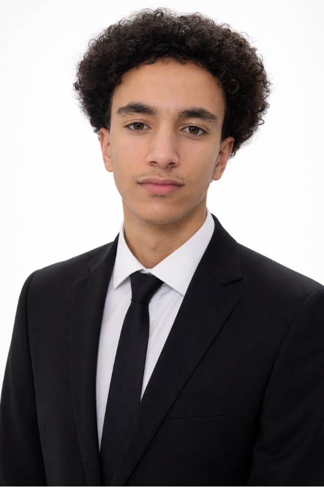

Hello, I'm Rayane Lebrazi
I like engineering, cars, programming, and making things work.

About me
I'm interested in everything to do with engineering, such as programming, engines, and handy work. I especially enjoy working on cars.
I would rather spend hours trying to automate a task than do the same task by hand. I also like to write, whether it is a long piece of code or a journal entry about my life.
My hobbies
- Playing football
- Playing basketball
- Working on my car
- Writing and programming
My proudest achievement
I changed a mechanical reading speedometer into a digital one. I used what I learned about Arduino and electromagnetic fields to make it work.
My academique career
I am an exchange student at Epitech International, where I am currently in my third year.
Before that, I spent two years at EMSI Fès in the preparatory cycle (2024-2026).